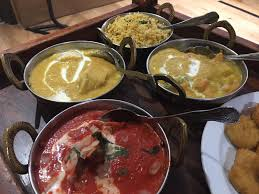
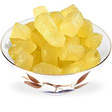

Agra is a city on the banks of the Yamuna river in the Indian state of Uttar Pradesh, about 230 kilometres south-east of the national capital New Delhi and 330 km west of the state capital Lucknow. It is famous for its Mughal architecture and for being home to one of the Seven Wonders of the World, the Taj Mahal - a monument of incredible elegance and architectural perfection. |
Quick Facts About Agra
Country: IndiaLocation: Uttar Pradesh
Language spoken: Hindi
Culture
| Agra is a beautiful amalgamation of cultures, the result of Rajput, Muslim and British rule in the region. Indian culture is well-known all over the globe for its diversity and the cultural heritage of Agra is one of the richest in the country due to its fascinating history. The city has been the nourishing ground for art, architecture, music, poetry, literature and crafts having been nourished by its rulers, especially the Mughals, for centuries. We find reminiscence of the Mughal influence in the traditions, customs, food and lifestyle along with the monuments of yesteryear that attract thousands of tourists every year to the city. |
People
The city of Agra though has been ruled by the Muslims for centuries, has higher population of Hindus. The second largest population, however, is that of the Muslims, with a spattering of people from other religions such as Jainism, Christianity, Sikhism and Buddhism. However, this diversity in faith has only unified their spirits and helps them lead a harmonious life. The dialect spoken in Agra is Braj Bhasha in addition to the standard Hindi, Urdu and English languages. |
Clothes
The people of Agra are colourful and love to sport colourful clothes. You will find people here sporting both traditional as well as modern clothing. In the past people chose to stick to traditional wear such as sarees, salwar-kameez, dhoti-kurta or kurta-pyajamas. For festivals and marriage functions people prefer wearing sherwani, lehenga-choli and ghagra-choli.
|
|
 |
 |
Tradition
The name of Agra is derived from the city’s ancient name Agrevana meaning ‘border of the forest’, found mentioned in the Hindu epic The Mahabharata. It is one of the most important historical places in India and houses one of the Seven Wonders of the World in the modern times, the Taj Mahal a UNESCO World Heritage Site. Agra is also home two other UNESCO World Heritage Sites, the Agra Fort and Fatehpur Sikri. The cities of Vrindavan and Mathura situated very near to Agra have left an indelible mark on the culture of the city, which finds expression through the celebration of Braj Raslila, Ram Lila, Charukala and Rasiya. Agra having inherited a rich culture and traditions from antiquity celebrates a plethora of cultural events and festivals in a grand manner. Dussehra, Diwali, Id and Ram Barat are the major festivals celebrated in the city with great fanfare. Other cultural events and festivals celebrated by the people of Agra are Taj Mahotsav, Kailash Fair, Janmashtami, Ram Lila, Dusshera, Urs Sufi Sahib and Bateshwar Fair to name a few.
|
Food
| Once being a home of the Mughals, the city is widely famous for the Mughal cuisines like Kebabs, Kormas and curries that involve curd, cream, nuts, almond and selected spices. The most popular food of Agra, apart from the famous Mughlai dishes, is the Pethas made from pumpkin and glucose and is popular all over India. Dal math is a kind of snack and also one of the specialties if the city. | ||
|  |  | |
Famous Restaurants in Agra
| Sr. No. | Top 5 Restaurants |
|---|---|
| 1. | Tea'se Me |
| 2. | The Global Savour Restaurant |
| 3. | D'Delicia |
| 4. | Taj Terrace |
| 5. | Treat Restaurant |
Top 5 places to visit in Agra
| Sr. No. | Top 5 Places |
|---|---|
| 1. | Taj Mahal |
| 2. | Agra Fort |
| 3. | Jahangir's Mahal |
| 4. | Jama Masjid |
| 5. | Buland Darwaza |
5 Star Hotels in Agra
| Image | Name | Location | Facilities | Cost |
|---|---|---|---|---|

|
9 Star Hotel | Near Taj Mahal | (Facilities) | Rs. 3,261 - Rs. 3,953 |


|
Amar Yatri Niwas | Near Taj Mahal | (Facilities) | Rs. 1,250 - Rs. 2,500 |


|
Bhoomi Residency - A Boutique Hotel | Near Taj Mahal | (Facilities) | Rs. 3,168 - Rs. 5,941 |


|
Country Inn Kosi | In Kosi | (Facilities) | Rs. 6,837 - Rs. 6,899 |


|
Crystal Retreat | Near Taj Mahal | (Facilities) | Rs. 2,480 - Rs. 2,542 |